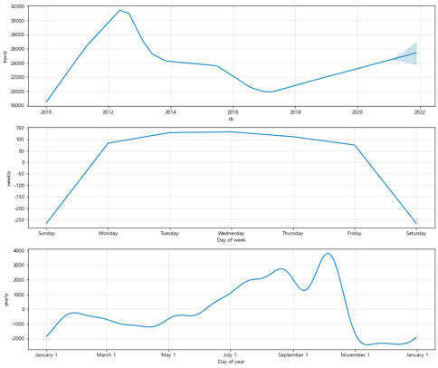
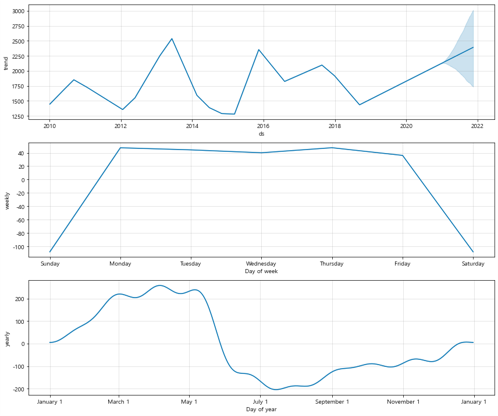

농산물 가격 예측 분석🥗
2020/09~2020/12
LSTM을 이용한 농산물 가격 예측
문제 인식
농산물의 가격은 비농산물의 가격과 비교해 높은 변동성을 가지고 있습니다. 농산물의 생산지는 기상환경 때문에 재배지가 한 곳에 집중되어 있는 상품이 많습니다. 대규모 재배 단지에 집중호우나 저온현상, 가뭄 등의 자연재해가 발생하면 농산물의 생산량에 타격을 받아 가격 변동이 있을 수 있습니다. 이러한 점은 소비자 입장에서는 구매의 부담을, 생산자 입장에서는 수입의 불안정성을 유발합니다. 이러한 문제점을 해결하기 위해 농산물 물가 예측 프로젝트를 주제로 선정하여 진행했습니다.
분석 주제
- 농산물의 생산량과 날씨는 상관관계를 가지는가
- 농산물의 가격에 상관관계를 미치는 변수는 무엇인가
- 농산물의 가격 예측
프로젝트 구조
- EDA를 통한 변수 선택
- Prophet분석
- LSTM분석(순환신경망 모델)
사용한 데이터
- kamis(open api)
- 가격 데이터 : 일별 가격데이터
- 유통비용 데이터 : 연도별 가격 데이터
- 농식품수출정보(csv)
- 수입수출 데이터(kg, $): 월별 데이터
- 기상청 기상자료개방포털(csv)
- 날씨 데이터 : 일별 날씨 데이터
- 농업관측 통계정보시스템(OASIS)(csv)
- 공급량 데이터(kg) : 일별 데이터
- 국가통계포털(csv)
- 생산량 데이터(t) : 연도별 데이터
- 소비자 물가지수 : 월별 데이터
1. EDA를 통한 변수 선택
- 날씨와 생산량의 상관관계
- 사과 🍎
- 양파 🧅
- 대파 🥬
- 사과 🍎
- 최저기온
- 평균기온
- 최고기온
- 유통비용
- 생산량
- 양파 🧅
- 유통비용
- 수입(중량)
- 수입(금액)
- 유통비용
- 생산량
- 대파 🥬
- 최저기온
- 평균기온
- 최고기온
- 생산량
사과와 대파는 날씨와 상관관계를 보였지만, 양파는 날씨와 상관관계를 보이지 않았습니다.
이용할 변수
2. Prophet분석
- 사과 🍎 
- 사과는 2012년에 가격이 가장 높았고, 1년 중 10월에 가격이 가장 높은 것을 알 수 있습니다.
- 사과의 가격이 2012년에 가장 높았던 이유는 장기저장에 영향으로 출하량은 꾸준히 감소하고 있으나, 제수용품 등의 소비는 일정하여 오름세를 보였기 때문이라고 kamis의 정보를 이용하여 추측해볼 수 있습니다.
- 1년 중 10월에 가장 가격이 높은 이유는 추석 성수기를 맞아 출하량이 늘었기 때문으로 추측해볼 수 있습니다.
- 양파 🧅 
- 양파의 가격은 연도마다 변동이 컸고, 1년 중에는 상반기에 가격이 더 높은 것을 알 수 있습니다.
- 양파의 가격이 상반기에 더 높은 이유는 양파의 수확기가 6,7월 달이기 때문에 산지 저장 양파의 보관 물량이 감소하는 가운데 장기 보관에 따른 상승과 산지 출하량 조절로 오름세로 거래된다고 kamis의 정보를 이용하여 추측해 볼 수 있습니다.
- 대파 🥬
- 대파의 가격은 연도마다 변동이 컸고, 1년 중 10월에 가장 가격이 높은 것을 알 수 있습니다.
- 대파의 가격이 10월에 높은 이유는 상품성이 좋은 강원지역의 고랭지 대파가 본격적으로 출하되고 있는 가운데, 고온 및 잦은 비로 인해 출하물량이 감소하여 오름세를 형성한 것을 kamis의 정보를 이용하여 추측해 볼 수 있습니다.
- Weekly에서 토요일과 일요일의 가격이 낮은 것은 가격이 낮은 게 아니라 토요일과 일요일은 거래를 하지 않는 날이기 때문입니다.
3. LSTM분석
- 30일 단위로 학습 데이터가 들어간 후 그 다음날을 예측
분석 결과
왼쪽 plot은 모델을 돌리고 학습된 output의 loss 값을 시각화한 그래프입니다. epoch 마다 validation loss가 감소하는 것을 확인할 수 있는데, 이는 모델이 잘 설계되어 훈련되었다는 것을 뜻합니다.
오른쪽 plot은 test 데이터를 학습시켜 예측한 값으로 파란색 선이 실제 가격 데이터이고, 주황색 선이 예측 가격 데이터입니다.
- 사과 🍎
- 시각화해서 확인해보면 예측이 뒷부분으로 갈수록 어긋나는 부분이 있지만 나머지 부분에서는 가격의 트렌드를 따라가는 것을 확인할 수 있습니다.
- 양파 🧅
- 시각화해서 확인해보면 예측이 어느 한 부분에서 좀 어긋난 부분이 있지만 나머지 부분에서는 가격의 트렌드를 따라가는 것을 확인할 수 있습니다.
- 대파 🥬


결론
LSTM을 이용한 시계열 예측 결과 예측 값이 실제 값의 트렌드를 따라가는 경향을 보이지만, 현재 데이터 셋의 변수 데이터가 부족하여 예측 범위가 길지 않고 정확성이 떨어졌습니다. 농산물의 가격에 영향을 주는 다른 변수들을 추가하면 훨씬 훌륭한 결과를 낼 수 있을 것입니다.